![[Graphics:Images/index_gr_7.gif]](Images/index_gr_7.gif)
| HOME | PERSONAL | PROJECTS | LINKS |
Un osservatore terrestre rivolto verso sud, osserva la posizione del
sole.
Fissiamo un riferimento cartesiano nella posizione dell'osservatore con
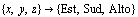
.Si vuole descrivere il vettore v nel tempo in coordinate cartesiane e polari (mediante gli angoli {θ,φ}).
Situazione iniziale:
all'equatore, solstizio d'estate, mezzogiorno.
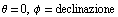
| 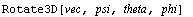 |
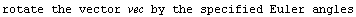 |
| 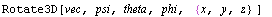 |
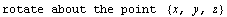 |
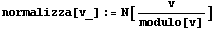
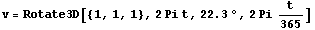
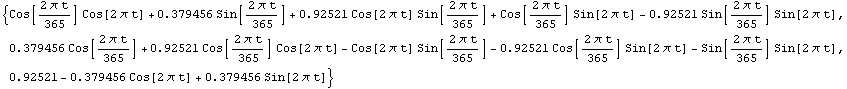
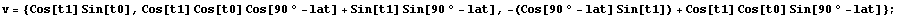
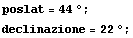
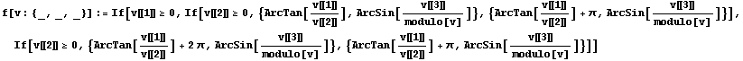
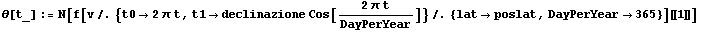
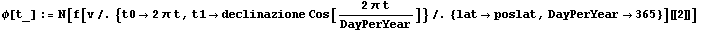
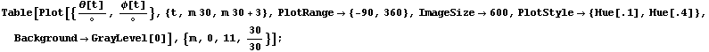
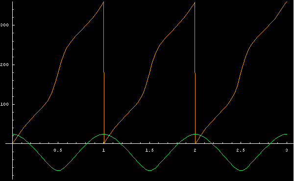
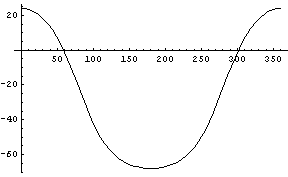
Teta massino e minimo
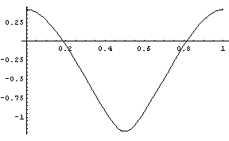
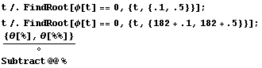
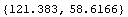
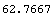
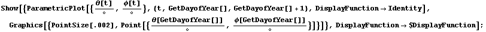
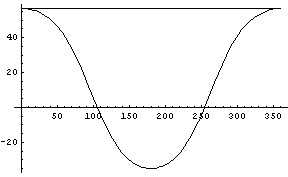
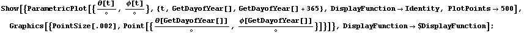
| HOME | PERSONAL | PROJECTS | LINKS |